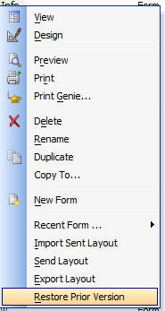
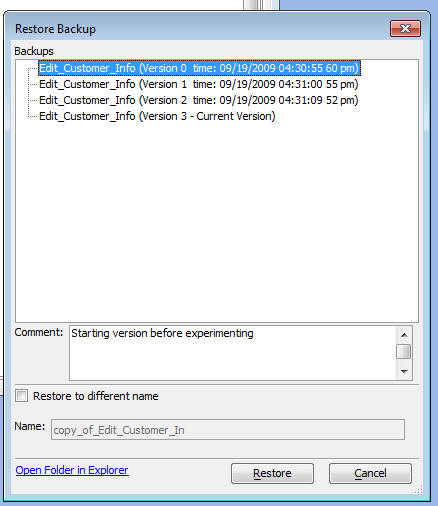

Automatic Backup and Revision Control of Layouts and Field Rules
Every time you make an edit to any Form, Label, Letter, Report, Browse or Field Rule, Alpha Five automatically make a backup of the object you editing. You can roll back to any previous version of your layout, or Field Rule definition that you want. This means that it is now virtually impossible to lose work because of a file corruption. And it lets you experiment with your layouts more freely because if you make a design change you don't like, its easy to revert back to a pervious version.
To restore a prior version of a Layout, right click on the Layout and select the 'Restore Prior Version' command.

The following dialog is shown:

The current version of the Object is always shown at the bottom of the list. For any entry in the list, you can type a comment into the Comment box. To restore a prior version, simply select an entry in the list and click the 'Restore' button. The current version of the Layout will be replaced by by the restored version.
Restoring to a Different Name
If you check the 'Restore to a different name' box, then when you click the 'Restore' button, the current version of the Object will not be replaced. Instead, a new Object will be created.
Managing the Backups
Each backup that is created is a physical file that is created in a special folder. Alpha Five never deletes old backups, so over time, the number of backups on your hard drive can become quite large. You can manage these backup files by clicking the 'Open Folder in Explorer' button. This will open the folder where the backups for the particular Object that you have currently selected are stored. You can then manually delete any backup files that you no longer wish to keep.
The folder in which backups are stored follows a special naming convention. For example, backups for Forms that are based on the Customer table will be stored in a folder called 'backup\Tables\Customer\Form' that is under the folder where the Database is stored.
Controlling automatic backups
You can turn off the automatic backup feature using the a5.System_Mode_set() command.
Example:
'Check status of feature
? a5.System_Mode_Get("auto_backup")
= "True"
'Turn feature off
a5.System_Mode_set("auto_backup","false")